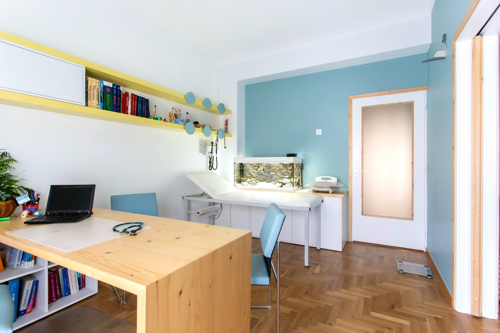

Γνωρίστε τον ιατρό
Ο Ιατρός
Μάριος Δέτσης — Παιδίατρος και διδάσκων στην Ιατρική Σχολή του Ευρωπαϊκού Πανεπιστημίου Κύπρου. Συνδυάζει κλινική εμπειρία στην Παιδιατρική με επιστημονική δραστηριότητα στη Δημόσια Υγεία, την Επιδημιολογία και τα Λοιμώδη Νοσήματα — με φροντίδα τεκμηριωμένη και ανθρώπινη.


Γνωριμία
Εκπαίδευση και ειδίκευση
Γεννήθηκε στην Αθήνα το 1982. Σπούδασε Ιατρική και εξειδικεύτηκε στην Παιδιατρική, με παράλληλη ακαδημαϊκή πορεία στη Δημόσια Υγεία και στα Λοιμώδη Νοσήματα.
- 2007 Ιατρική Σχολή ΕΚΠΑ
- 2009 MSc Δημόσιας Υγείας — ΕΣΔΥ
- 2012–16 Ειδίκευση Παιδιατρικής, «Αγία Σοφία»
- Brown Hasbro Children’s Hospital
Πορεία
Επαγγελματική εμπειρία
- 2009–2012: Εργάστηκε στο Κέντρο Ελέγχου και Πρόληψης Νοσημάτων, στους τομείς των λοιμωδών νοσημάτων και της πρόληψης νοσημάτων που προλαμβάνονται μέσω εμβολιασμού.
- Απέκτησε κλινική εμπειρία στις παιδιατρικές λοιμώξεις στο Πανεπιστήμιο Brown, στο Hasbro Children’s Hospital.
- Συμμετείχε σε ερευνητικά προγράμματα στο πεδίο των λοιμώξεων.
- Διδάσκει στην Ιατρική Σχολή του Ευρωπαϊκού Πανεπιστημίου Κύπρου.
Ερευνητικά ενδιαφέροντα. Το ερευνητικό του ενδιαφέρον εστιάζεται κυρίως στη Δημόσια Υγεία, την Επιδημιολογία, καθώς και στην πρόληψη και τον έλεγχο των Λοιμωδών Νοσημάτων.
Μητρικός θηλασμός. Είναι πιστοποιημένος εκπαιδευτής στον Μητρικό Θηλασμό και δίνει έμφαση στην προαγωγή του μέσα στην καθημερινή παιδιατρική φροντίδα.

Κλινική πράξη
Παιδιατρική φροντίδα με επιστημονική τεκμηρίωση.
Επιστημονικό έργο
Δημοσιεύσεις και ακαδημαϊκή δραστηριότητα
Έχει συγγράψει μεγάλο αριθμό δημοσιεύσεων σε διεθνή επιστημονικά περιοδικά με κριτές, καθώς και κεφάλαιο βιβλίου, με αντικείμενο τη Δημόσια Υγεία, την Επιδημιολογία και τα Λοιμώδη Νοσήματα. Συμμετέχει σε ελληνικά και διεθνή επιστημονικά συνέδρια Παιδιατρικής και Λοιμωδών Νοσημάτων.

Συνέδρια
Συμμετοχή σε ελληνικές και διεθνείς επιστημονικές συναντήσεις.
Μέλος & Συνεργασίες
Επιστημονικές συνεργασίες και μέλος διεθνών οργανισμών


Φιλοσοφία φροντίδας
Υπηρεσίες υψηλής ποιότητας, για κάθε οικογένεια.
Έμφαση στη σωστή ανάπτυξη του παιδιού, στην πρόληψη και στη φροντίδα του άρρωστου παιδιού — με βάση τις τρέχουσες διεθνείς κατευθυντήριες οδηγίες και χρήση φαρμάκων μόνο όταν είναι πραγματικά απαραίτητο.
Κλείστε ραντεβού με τον ιατρό.
Παιδιατρική φροντίδα με επιστημονική τεκμηρίωση και ουσιαστική στήριξη της οικογένειας. Στείλτε αίτημα ηλεκτρονικά ή καλέστε το ιατρείο που σας εξυπηρετεί.
Φόρμα ραντεβού